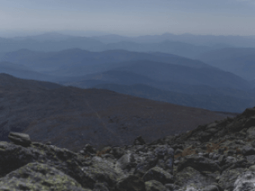
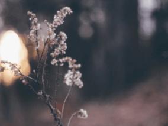
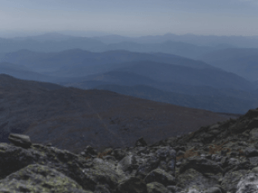
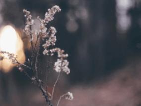

From Portland to Portland
An epic bicycle journey from Portland, ME. to Portland, OR

YOUR JOURNEY STARTS HERE
Know the country you live in a little better
That's exactly what we have arranged for you via this travel story
Need more action and adventure in your life instead of the same old routine? From Portland, Maine to Portland, Oregon we're going to take you on an exciting journey through some unknown regions of your country. Leave the car at home and travel by bike starting in New England where it all began. You will pass through 12 beautiful states, covering a total of 3,600 miles, and accomplish 3 monumental missions. Partying and taking a selfie with a famous rock star, donating $1 to a billionaire to help eradicate polio in Africa, and even stopping by famous author Stephen King's house to say hi and asking him to sign your favorite book.
- Distance (miles) 3,644
- Travel time (days) 22
- Highest point (feet) 9,613
- Lowest point (feet) -3


 





Maine

Still, as sparsely populated as it was in the 1600s, this is an extraordinary and highly underrated state full of rich history and majestic natural beauty. Maine is the main state you want to be sure not to miss. As your journey is going to be a long one, you had best be prepared for an arduous trek.
Thankfully, not only is Maine home to the very first European settlers on US territory in the era of Vikings, but is also home to L.L. Bean, which is a great company to grab a super sturdy backpack from for your 3-month expedition.
Average cost: $80-100.
New Hampshire

URL
timberland.comThere's no better place to lose yourself in nature than in springtime New Hampshire. As serene and beautiful as it was in the 1700s, this state is still much less traveled than its neighbors to the South. So enjoy it while it lasts.
You won't be on your bike the whole time, so doesn't it make sense to pick up some extra footwear? Fortunately for you, the best outdoor shoe company in the history of the world proudly hails from this state. Cycle by the Timberland headquarters in Stratham, and pick up a pair of rugged, waterproof boots to keep your feet dry. Fitting for unpredictable weather you may be confronted by while passing through the Appalachians. These boots are also better than cycling shoes when pitching a tent.
Average cost: $100-150.
New York

URL
ge.comNot only famous for “The Big Apple,” the state of NY also has several other reasons for going down in history. Since the late 1800s Schenectady, “The City that Lights and Hauls the World,” has been home to the world-famous General Electric Company.
This is where modern power generators were born as well as contemporary means of transmitting energy. So we figured this would be the perfect place to find a batteryless dynamo light for your bicycle to help you see through those dark lonely roads on your adventure. Such a light from GE will set you back about $10-20.
Erie, PA

URL
www.fws.govErie, Pennsylvania, not to be confused with the word “eerie,” although it can be from time to time, is another town worth passing through for several different reasons. While it might be most famously known as the scene of the Gettysburg address delivered by Mr. Lincoln during the Civil war, Pennsylvania also has produced a rather decent-sized Amish community (eerie, huh?)
The reason we've brought you here today, if you haven't already guessed, can be summed up by using one delicious word: chocolate. Hershey's is a Pennsylvania-based company. Most likely, one of the tastiest missions you'll ever embark on during this tour, try to find an Amish friend and enjoy a bar in the National Wildlife Refuge on your way to Erie and have an extra eerie time!
The current cost of a Hershey's Chocolate bar: about 60¢.
Ohio

URL
cedarpoint.comFrom the college capital of Columbus to the clean coastline of Cleveland, Ohio is a truly hidden gem. Earthquakes are surprisingly common in this particular region of North America, over 200 of which have registered with a magnitude of 2 or higher since 1776. However, earthquakes aren't the only thing shaking this centrally located state. One of the country's largest and oldest roller coaster parks is waiting to ROCK your world in Sandusky, Ohio! This will presumably be one of the most thrilling quests you'll ever complete (provided you can stomach it). Take a much-deserved break to ride as many roller coasters as you can before continue your bike ride!
The cost of a daily ticket: about $100.
Historic Route 66
The Main Street of America from Santa Monica, Cal. to Chicago, Ill. within an iframe